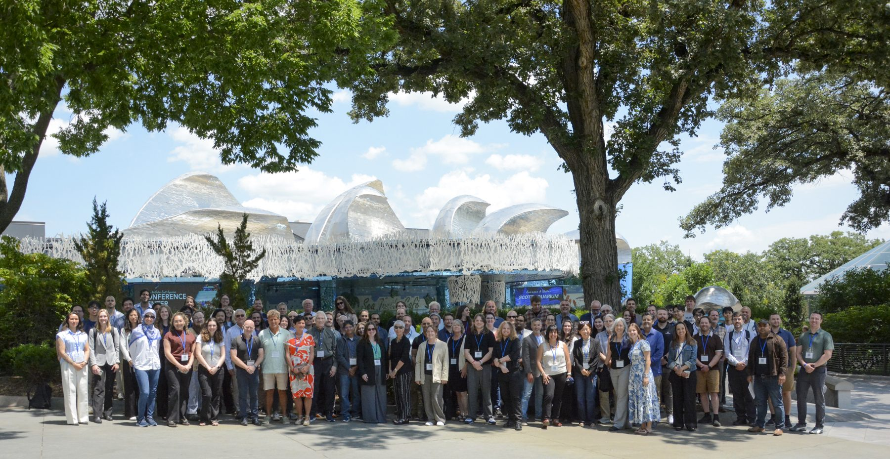

There is no shore from which to watch the cosmos. Whatever we learn of it, we learn as part of the current, the way a river might come to know its own course.
Master's student in Nuclear Engineering, Université Paris-Saclay and INSTN · Orsay, France
A chemist who came to physics sideways, and a veteran who learned to lead before learning to measure.
Every problem I have worked on has asked the same question: how do you learn about a system while belonging to it? I first met that question in a chemistry laboratory, then in a movement laboratory where the body's own noise turned out to carry structure across scales, and now in quantum mechanics, which I have read about since I was young and where every measurement disturbs what it records.
I am a first-year master's student in Nuclear Engineering at Université Paris-Saclay, on the chemistry and chemical engineering track taught with INSTN at CEA Saclay. I hold a Bachelor of Science in Chemistry with a minor in Biomechanics from the University of Nebraska Omaha. Before science I served in the United States Air Force, and I plan to pursue a doctorate in nuclear and particle physics.
Ĥ|research⟩
Research
Four questions, one thread: knowing when a measurement, a model or an average can be trusted.
Quantum measurement · First author
Asking an atom where it is going, without spoiling the interference
Atoms crossing a double slit build an interference pattern, and a probe strong enough to see where they are usually destroys it. My paper proposes a gentle probe: a curtain of far-detuned light whose faint deflection carries information about each atom. I derived the formula that turns that deflection into the atoms' conditional momentum field, extending the 2011 photon experiment of Kocsis and Steinberg to matter waves, and built the forward model showing that a first test is within reach of present cold-atom sources.
The proposed experiment: cold rubidium atoms fall through a double slit and cross a light curtain at twenty heights before landing on the screen.Where the measurement is gentle enough to keep the interference yet strong enough to read: the green band, with the operating point starred. Regenerated from my published code.
Fabianiak and Deligiannis · revised manuscript under review at New Journal of Physics
A pooled estimate can grow ever more precise while describing no individual in the sample. I wrote the software and analysis for three diagnostics that reveal it from the data alone: a bias that stops shrinking as the sample grows, prediction errors that split by hidden subgroup, and forecast errors that widen with the horizon. In reanalyses of mood-monitoring and cognitive-training data, the pooled estimates matched only 5% and 0.1% of the individual ones.
Try it: add more people, and watch the answer grow confident and wrong
Each simulated person follows one of two dynamics: some settle back toward balance (persistence 0.3), others drift (persistence 1.0). Bars show each person's own estimate; the gold line and band are the pooled average and its 95% interval.
Fabianiak and Mangalam · manuscript
Nonlinear dynamics · Co-author
The structure hidden in the body's noise
Standing balance looks steady, yet its small corrections carry a memory across time scales. Recording younger and older adults on a stable surface and on a wobble board, our team found that the network coordinating those corrections grows paradoxically rigid with age, and that wobble-board dynamics can serve as a scalable test of long-latency reflexes. I collected and curated the motion-capture data behind both studies.
Medicine triumphed over diseases with one discrete cause, and in doing so built institutions poorly suited to illness distributed across scales, as in aging. I co-wrote this hypothesis-and-theory article on what a multiscale view would change.
The hardest problems lived between the participant and the data. Two I solved:
Synchronization
Three instruments, one clock
Electroencephalography, motion capture and eye tracking ran on separate computers with separate clocks. I wrote a shared hardware trigger into the EEG and motion-capture streams and aligned the eye tracker with two independent events, a blink and a teeth clench, so that each anchor checked the other and exposed any drift.
Validation
Proving the cleaning did not create the signal
EEG recorded during balance was buried in motion artifact. I ran every analysis with and without the cleaning step, tracked the components rejected in each condition, and wrote a diagnostic of exactly what was removed, until a theta-specific effect emerged that the residuals confirmed was real.
A wobble-board trial: motion-capture markers, EEG and eye tracking recorded together.Presenting our wobble-board research at the University of Nebraska Omaha Biomechanics Research Building.
Earlier, I commissioned a complete high-performance liquid chromatography laboratory at Xenova Sciences, from instrument qualification to validated methods and written procedures. I analyse data in Python, MATLAB and R, and I do my best work where analysis serves hands-on experiments.
|collaboration⟩
Leadership
The best science happens when different perspectives are set side by side.
As co-chair of the International Conference on Perception and Action (ICPA 2026), I helped bring researchers from more than twenty countries into one programme and ran its budget and committees. My laboratory taught me the same lesson daily: its members came from Greece, Iran, the United States and Canada, and brought engineering, neuroscience and physical therapy to shared data.

ICPA 2026 participants at the Scott Aquarium Conference Center, Omaha.
I learned to lead in the United States Air Force, where I served as an Aerospace Medical Technician and where leading people was part of every working day. I carry that sense of duty into every team I join.
⟨record⟩
Publications
Peer-reviewed
2026Mangalam M, Schlattmann B, Fabianiak J, Deligiannis T. Paradoxical network rigidity and peripheral decoupling: age-related breakdown of adaptive postural control. npj Aging.doi
2026Deligiannis T, Barfi M, Fabianiak J, Schlattmann B, Kiyono K, Kelty-Stephen DG, Mangalam M. Wobble-board dynamics as a scalable assay of long-latency reflex function in aging. GeroScience.doi
2026Mangalam M, Fabianiak J, Cense B. The success–failure inversion in modern medicine. Frontiers in Public Health 14:1932205. doi
2026Mangalam M, Fabianiak J, Kiyono K. The ontology of digital measurement: what biomarkers reveal about the nature of health data. npj Digital Medicine, in press.
2026Mangalam M, Fabianiak J. The movement imperative: reimagining healthcare through the lens of human movement. Frontiers in Sports and Active Living 8:1667847. doi
Under review
2026Fabianiak J, Deligiannis T. Weak-measurement reconstruction of the conditional momentum field for atomic matter waves: a dispersive photon-curtain protocol following Kocsis–Steinberg. New Journal of Physics.preprint
2026Mangalam M, Fabianiak J. Parametric versus functional heterogeneity and the limits of population inference. Journal of the Royal Statistical Society, Series A.preprint
|entangle⟩
Contact
I am looking for experimental research in nuclear and particle physics for 2027.